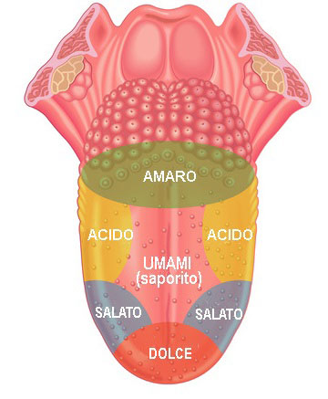

|  |
IL GUSTO
Il gusto è uno dei sensi fondamentali per l’uomo, non solo per il piacere che offre, ma anche per il suo ruolo essenziale
nella sopravvivenza. Attraverso la lingua e i recettori gustativi, il nostro corpo è in grado di distinguere tra alimenti
nutrienti e sostanze potenzialmente pericolose. La capacità di percepire i sapori ci guida nelle scelte alimentari,
aiutandoci a soddisfare le esigenze nutrizionali e a evitare tossine o cibi avariati. Ma il gusto non agisce da solo:
è strettamente legato all’olfatto, e insieme creano l’esperienza completa del sapore, rendendo ogni pasto un
viaggio sensoriale unico.
COME FUNZIONA IL SENSO DEL GUSTO?
La lingua è l’organo principale del gusto ed è ricoperta da migliaia di papille gustative, che sono distribuite in diverse
aree, tra cui la punta, i lati e la parte posteriore. Ogni papilla contiene recettori specializzati, capaci di percepire
i cinque sapori principali: dolce, salato, acido, amaro e umami. Quando le molecole
degli alimenti si dissolvono nella saliva, raggiungono questi recettori, che inviano segnali nervosi al cervello.
I segnali gustativi vengono trasportati attraverso i nervi gustativi al tronco encefalico e successivamente alla corteccia
gustativa del cervello. Qui i sapori vengono identificati e combinati con le informazioni provenienti dall’olfatto, creando
una percezione complessa e multidimensionale del gusto. È interessante notare che alcune parti del cervello collegano i
sapori a emozioni e ricordi, rendendo l’esperienza del cibo profondamente personale.
I SAPORI E IL LORO SIGNIFICATO
-
Dolce: Associato agli zuccheri e ai carboidrati, rappresenta una fonte di energia immediata per il corpo.
È generalmente percepito come piacevole e confortante.
-
Salato: Essenziale per il mantenimento dell'equilibrio elettrolitico e per molte funzioni cellulari.
Indica la presenza di minerali come il sodio, fondamentali per il nostro organismo.
-
Acido: Indica la presenza di acidi, spesso trovati negli agrumi o nei cibi fermentati. Questo sapore
può segnalare alimenti freschi, ma in eccesso potrebbe indicare cibi deteriorati.
-
Amaro: È un segnale di allarme naturale contro sostanze potenzialmente tossiche o dannose. Tuttavia,
molti cibi amari, come il caffè e il cacao, sono apprezzati culturalmente.
-
Umami: Conosciuto come il "sapore del glutammato", è legato alla carne, al formaggio e ai pomodori.
Dona una sensazione di profondità e soddisfazione ai piatti.
CURIOSITÀ SUL GUSTO
La lingua umana è un organo straordinario. Ogni persona ha circa 10.000 papille gustative, ma questo numero tende
a diminuire con l’età, spiegando perché i sapori possono diventare meno intensi man mano che invecchiamo. Un fatto
interessante è che senza l’olfatto, il gusto sarebbe notevolmente ridotto: infatti, l’80% dell’esperienza del
sapore è determinata dall’olfatto. Anche il comportamento alimentare dei neonati è curioso: fin dalla nascita, mostrano
una naturale preferenza per il dolce e una forte avversione per l’amaro, un meccanismo di protezione evolutiva.
Un altro aspetto affascinante è la presenza di recettori del gusto in altre parti del corpo, come nell’intestino e nelle
vie respiratorie, il che suggerisce che il senso del gusto possa svolgere un ruolo molto più ampio di quanto si pensasse,
contribuendo anche alla regolazione della digestione.
COME MIGLIORARE L’ESPERIENZA DEL GUSTO
Per apprezzare al massimo i sapori, è importante adottare alcune buone pratiche. Mangiare lentamente permette al cervello
di elaborare meglio i sapori e di creare un’esperienza sensoriale più ricca. Una buona igiene orale è fondamentale per
preservare la sensibilità delle papille gustative e mantenere la lingua in salute. Evitare il fumo e limitare l’uso di
alcol è altrettanto importante, poiché entrambe queste abitudini possono danneggiare i recettori del gusto. Infine,
sperimentare con nuovi alimenti e combinazioni di sapori può arricchire il nostro repertorio gustativo e renderci più
consapevoli delle infinite sfumature che il cibo ha da offrire.
|
|
Influenze Esterne sul Gusto
| Fattore |
Descrizione |
Esempi Pratici |
| Temperatura del cibo |
La percezione del gusto cambia in base alla temperatura degli alimenti. |
Gelato troppo freddo può risultare meno dolce; cibi caldi amplificano l'umami. |
| Aspetto visivo |
L'aspetto e il colore degli alimenti influenzano le aspettative di sapore. |
Cibi di colore vivace sono percepiti come più gustosi. |
| Consistenza |
La texture modifica la percezione dei sapori. |
Cibi croccanti sono associati a freschezza e qualità. |
| Ambiente circostante |
Odori, luci e suoni intorno influenzano l'esperienza gustativa. |
Una cena con luci soffuse può rendere il pasto più piacevole. |
| Stato emotivo |
Le emozioni possono alterare la percezione dei sapori. |
La tristezza può ridurre la sensibilità al dolce. |
|
Fattori Personali che Influenzano il Gusto
| Fattore Personale |
Descrizione |
Effetto sulla Percezione del Gusto |
| Età |
Con l'invecchiamento, il numero di papille gustative tende a diminuire. |
Riduzione della sensibilità ai sapori, soprattutto dolce e salato. |
| Abitudini Alimentari |
La dieta regolare influenza le preferenze gustative. |
Un consumo eccessivo di zuccheri può ridurre la percezione del dolce naturale. |
| Genetica |
Alcuni individui hanno una sensibilità maggiore per certi sapori, come l'amaro. |
Predisposizione a preferire o evitare determinati alimenti. |
| Esposizione Precoce |
I sapori provati durante l'infanzia modellano le preferenze future. |
Chi è cresciuto con cibi speziati tende a preferirli da adulto. |
| Stato di Salute |
Malattie o trattamenti (come la chemioterapia) possono alterare il gusto. |
Cambiamenti temporanei o permanenti nella percezione dei sapori. |
|